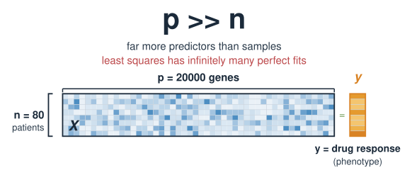
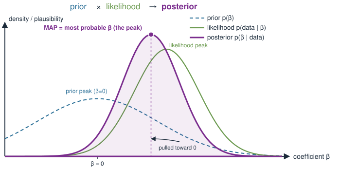
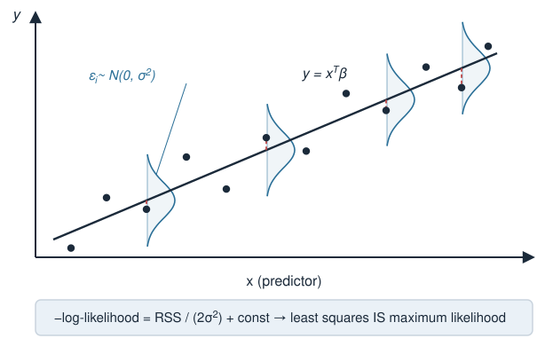
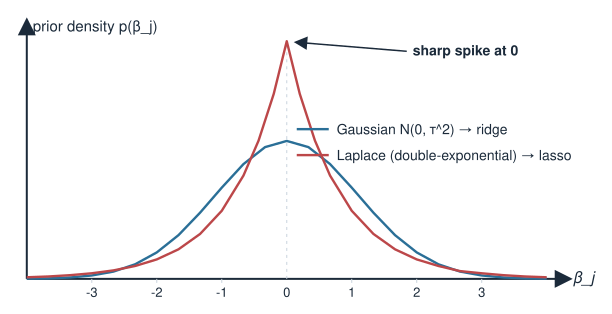
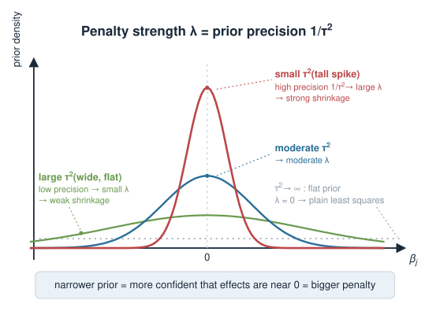
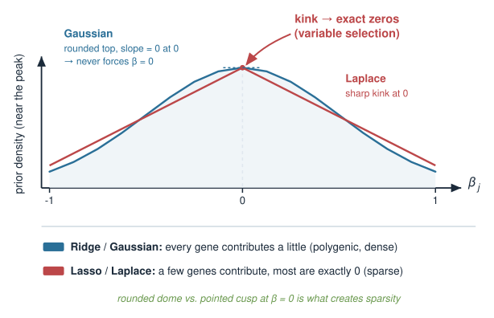
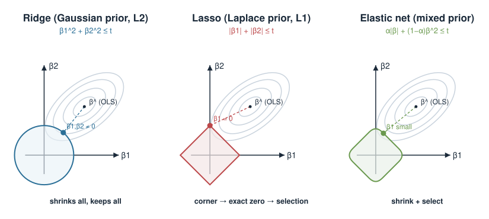

This block sits at the seam between the penalized-regression and Bayesian parts of the course. It may be moved to a later statistics / machine-learning course as the syllabus settles. Treat it as a bridge unit: it assumes you have already met ridge and lasso as optimisation, and Bayes’ theorem as inference.
In Ridge and lasso regression we added a penalty to least squares to tame wobbly coefficients. In the Bayesian inference block we learned to combine a prior with a likelihood. Today we show these are the same move seen from two sides.
A penalty on the coefficients is a prior belief about the coefficients.
Minimising penalised loss = finding the most probable coefficients given the data (the MAP estimate).
Ridge ⇔ a Gaussian prior; lasso ⇔ a Laplace (double-exponential) prior.
The penalty strength \(\lambda\) encodes how sure you were before seeing data — the prior precision.
This is a concept day: light math, one master equation, and a change of viewpoint that makes both blocks click together.
A biology picture first
You want to predict a phenotype — say drug response — from a gene-expression profile.
You measure 20 000 genes in 80 patients. Far more predictors than samples (\(p \gg n\)).
Plain least squares is hopeless here: it has infinitely many perfect fits and memorises noise.
But you know things before you look: most genes are irrelevant to this drug, and the few that matter probably have modest effects, not wild ones.
That prior knowledge is exactly what a penalty quietly injects. Today we make the belief explicit: what does ridge assume about your genes? What does lasso assume?

Recap: the penalised objective
From Ridge and lasso regression, we fit coefficients \(\boldsymbol\beta\) by minimising fit error + penalty:
\[\hat{\boldsymbol\beta} = \arg\min_{\boldsymbol\beta}\ \underbrace{\sum_{i=1}^n \big(y_i - \mathbf{x}_i^\top\boldsymbol\beta\big)^2}_{\text{residual sum of squares (RSS)}} \;+\; \lambda\, \underbrace{\mathcal{P}(\boldsymbol\beta)}_{\text{penalty}}\]
Ridge:\(\mathcal{P}(\boldsymbol\beta) = \sum_j \beta_j^2 = \lVert\boldsymbol\beta\rVert_2^2\) (sum of squares).
Lasso:\(\mathcal{P}(\boldsymbol\beta) = \sum_j |\beta_j| = \lVert\boldsymbol\beta\rVert_1\) (sum of absolute values).
\(\lambda \ge 0\) dials the penalty: \(\lambda = 0\) is plain least squares; large \(\lambda\) shrinks coefficients hard toward \(0\).
Recap: Bayes in one line
From Bayesian inference: to learn parameters \(\boldsymbol\beta\) from data, combine what you believed before with what the data say.
Likelihood — how well a given \(\boldsymbol\beta\) explains the observed data.
Prior — how plausible that \(\boldsymbol\beta\) was before seeing any data.
Posterior — the updated belief, combining both.
A quick summary of the posterior is its peak — the single most probable \(\boldsymbol\beta\). That is the MAP estimate (maximum a posteriori), and it is where the bridge to penalties is built.

The one trick: turn products into sums
Maximising a product of probabilities is awkward; maximising its logarithm is easy and gives the same peak (log is increasing). Taking \(-\log\) turns “maximise” into “minimise”:
The fit term is just the residual sum of squares, scaled by \(1/(2\sigma^2)\). This is why ordinary least squares is maximum-likelihood under Gaussian noise — a fact from the Linear regression block, now in probability language.

Adding a prior on the coefficients
Now assert a prior on each coefficient \(\beta_j\). Take them independent and centred at \(0\) — encoding “before seeing data, I expect effects to be small, and I have no reason to prefer positive over negative.”
The shape of \(p(\beta_j)\) is the modelling choice. Two natural bell-ish curves centred at \(0\):
a Gaussian\(\mathcal{N}(0,\tau^2)\) — smoothly peaked, light-ish tails;
a Laplace (double-exponential) — a sharp spike at \(0\) with heavier tails.
Each choice, pushed through \(-\log\), produces a different penalty. That is the whole story.

Ridge = a Gaussian prior
Put a Gaussian prior on each coefficient: \(\beta_j \sim \mathcal{N}(0,\ \tau^2)\). Its density is \(\propto \exp\!\big(-\beta_j^2 / 2\tau^2\big)\), so
Read the identity \(\lambda = \sigma^2/\tau^2\) as a statement about confidence. The precision of the prior is \(1/\tau^2\) — how tightly it is concentrated at \(0\).
Prior variance \(\tau^2\)
Prior belief
Precision \(1/\tau^2\)
\(\lambda\)
Effect
small
“effects are surely tiny”
high
large
strong shrinkage
large
“effects could be anything”
low
small
weak shrinkage
\(\tau^2 \to \infty\)
flat / no prior
\(0\)
\(0\)
plain least squares
So choosing \(\lambda\) is choosing how sure you were before the data. A big penalty is not an arbitrary knob — it is a strong, confident prior that the genes have small effects.

Lasso = a Laplace prior
Now swap the Gaussian for a Laplace (double-exponential) prior: \(p(\beta_j) \propto \exp\!\big(-|\beta_j| / b\big)\). Its negative log is linear in \(|\beta_j|\):
which is exactly the lasso, with \(\lambda_{\text{lasso}} = 2\sigma^2/b\). Same recipe, different prior: the absolute-value penalty comes from the Laplace’s \(|\beta|\) in the exponent.
Why the shape matters: sparsity
The two priors differ most right at \(\boldsymbol\beta = 0\):
Gaussian (\(\propto e^{-\beta^2}\)) is smooth and flat at \(0\) — its slope there is zero, so it never insists a coefficient be exactly \(0\). Ridge shrinks everything but keeps all \(\beta_j \ne 0\).
Laplace (\(\propto e^{-|\beta|}\)) has a sharp cusp at \(0\) — a kink that puts a lot of prior mass on “exactly zero.” Lasso therefore sets weak coefficients exactly to \(0\) (variable selection).

So the biological reading is direct:
Ridge / Gaussian prior:“every gene contributes a little” — a polygenic, dense belief.
Lasso / Laplace prior:“a few genes contribute, most contribute nothing” — a sparse belief.
Choosing a prior is a biological statement
Because the penalty is a prior, picking a penalty is picking a hypothesis about your system — state it out loud:
Biological belief
Prior
Penalty
Behaviour
“Many genes, each a small effect” (polygenic trait)
Gaussian
ridge (\(\lVert\boldsymbol\beta\rVert_2^2\))
shrink all, keep all
“A few driver genes, rest irrelevant”
Laplace
lasso (\(\lVert\boldsymbol\beta\rVert_1\))
select a sparse set
“Effects are small and mostly zero”
Gaussian + Laplace mix
elastic net
shrink + select
“I truly know nothing”
flat
none
least squares (fails if \(p\gg n\))
The elastic net (from Ridge and lasso regression) is the MAP under a blend of the two priors — which is why it both shrinks and selects.

A glimpse in R
Nothing new to run — the same glmnet fit you used in Ridge and lasso regression is a MAP estimate under a prior. The point is only to read it that way:
library(glmnet)# X: 80 patients x 20000 genes ; y: drug responsefit <-glmnet(X, y, alpha =0) # alpha = 0 -> ridge (Gaussian prior)fit <-glmnet(X, y, alpha =1) # alpha = 1 -> lasso (Laplace prior)fit <-glmnet(X, y, alpha =0.5) # 0<alpha<1 -> elastic net (mixed prior)# lambda picked by cross-validation = data-driven choice of prior strengthcvfit <-cv.glmnet(X, y, alpha =1)lambda <- cvfit$lambda.min # small lambda = weak prior; large = strong prior
Reading each line as a prior:
alpha selects the prior shape (Gaussian, Laplace, or a blend).
lambda sets the prior precision — how strongly you assert small effects before the data.
cross-validating lambda = letting the data choose how confident a prior to hold.
Caveat: MAP is only the peak
The equivalence is exact, but it identifies penalised regression with the peak of the posterior — not the whole thing.
A full Bayesian analysis reports the entire posterior: the peak and its width (uncertainty), so you get credible intervals on each \(\beta_j\). MAP throws the width away.
The prior “variance” \(\tau^2\) (or scale \(b\)) is usually not known in advance. Cross-validating \(\lambda\) is a practical stand-in for a fully Bayesian treatment of that unknown.
Subtlety: under the Laplace prior, the MAP is sparse (exact zeros) but the posterior mean is not — so “lasso = Bayesian sparsity” holds for the peak, not for the averaged estimate.
The bridge is genuine and useful, but “penalised regression is secretly Bayesian” is a statement about the MAP point, with the honesty a real Bayesian analysis adds on top.
Take-home: a penalty is a prior in disguise. Choosing ridge vs lasso is choosing a biological hypothesis — polygenic vs sparse — and \(\lambda\) is how strongly you hold it. Next / related: full posteriors and uncertainty in the Bayesian inference block; the penalties themselves in Ridge and lasso regression.